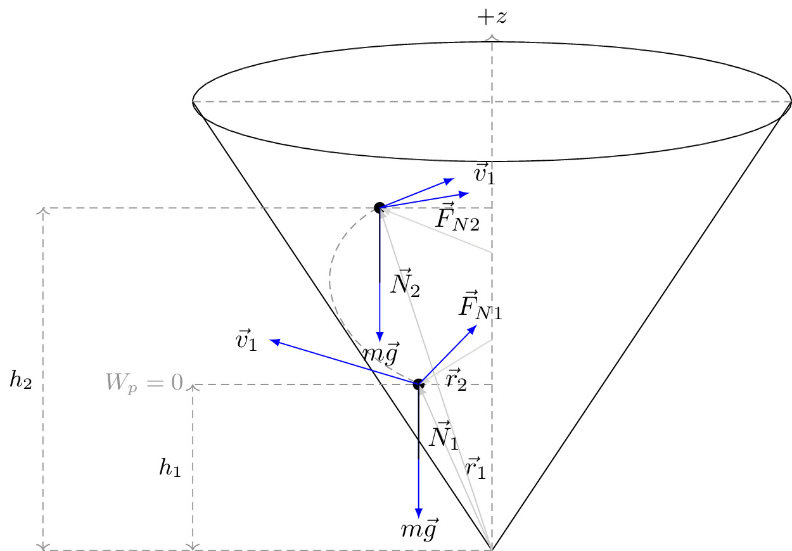

pre.tex
\documentclass[tikz]{standalone}\input{pre.tex}\begin{document}\begin{tikzpicture}[scale=2]
\xdef\r{2}
\draw (0,3) ellipse (2 and 0.4);
\draw (0,0) -- ({\r},3) (0,0) -- (-\r,3);
\draw[axis] (-2,3) -- (2,3);
\draw[axis, rotate=-10] (0,0) ++(-0.7,1.02) arc (-110:-220:1.05cm and 0.7cm);
\draw[axis, ->] (0,0) -- ++(0,3.45) node[above,black] {$+z$};
\def\h{1.11}
\def\hh{2.29}
\draw[axis] (0,\hh) -- ++(-3,0);
\draw[axis] (0,\h) -- ++(-2,0) node[left] {$W_p=0$};
\draw[axis] (0,0) -- ++(-3,0);
\draw[axis,<->] (-2,0) -- node[left, black] {$h_1$} ++(0,\h);
\draw[axis,<->] (-3,0) -- node[left, black] {$h_2$} ++(0,\hh);
\draw[fill=black] (-0.49,\h) coordinate (I) circle (1pt);
\draw[fill=black] (-0.75,\hh) coordinate (II) circle (1pt);
\draw[force,black!25, <-] (I) -- node[below, black, pos=0.5, right] {$\vec{r}_1$} (0,0);%++(0.49,0.3);
\draw[force,black!25, <-] (II) -- node[below, black, pos=0.5, right] {$\vec{r}_2$} (0,0);%++(0.75,-0.3);
\draw[force,black!20, <-] (I) -- ++(0.49,0.3);
\draw[force,black!20, <-] (II) -- ++(0.75,-0.3);
\draw[force,->] (I) -- node[left, pos=1] {$\vec{v}_1$} ++(-1,0.3);
\draw[force,->] (II) -- node[left, pos=1.7, yshift=-6pt] {$\vec{v}_1$} ++(0.5,0.2);
\draw[force,->] (I) -- ++(0,-0.9) node[below, yshift=0.4em] {$m\vec{g}$};
\draw[force,->] (II) -- ++(0,-0.9) node[below, yshift=0.4em] {$m\vec{g}$};
\draw[angular] (I) -- node[right, yshift=-0.5em] {$\vec{N}_1$} ++(0,-0.5);
\draw[angular] (II) -- node[right, yshift=-1.4em] {$\vec{N}_2$} ++(0,-0.5);
\draw[force,->] (I) -- node[anchor=south west, yshift=1em] {$\vec{F}_{N1}$} ++(0.39,0.4);
\draw[force,->] (II) -- node[anchor=south west, yshift=-1.5em] {$\vec{F}_{N2}$} ++(0.6,0.1);
\end{tikzpicture}\end{document}